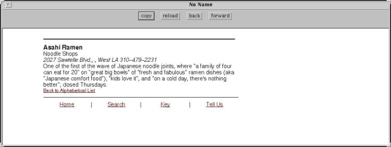
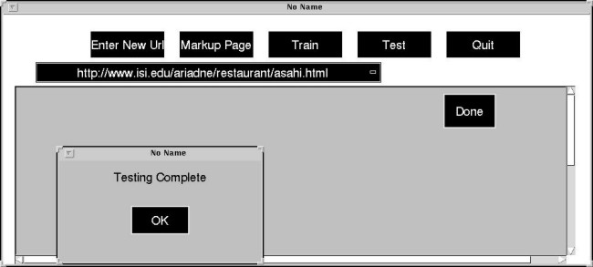
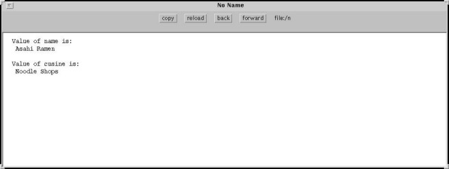

In order to perform the testing, you must specify the new URL (e.g., "http://www.isi.edu/ariadne/restaurant/asahi.html") and then press the "Test" button. The results of the extraction task are also displayed in the browser window.


Return to Ariadne demos page. Return to Ariadne home page.
Last
modified: Wed Jul 22 16:57:50 PDT 1998